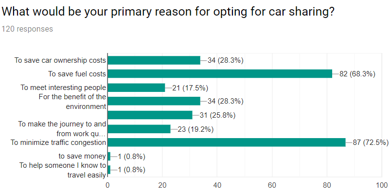
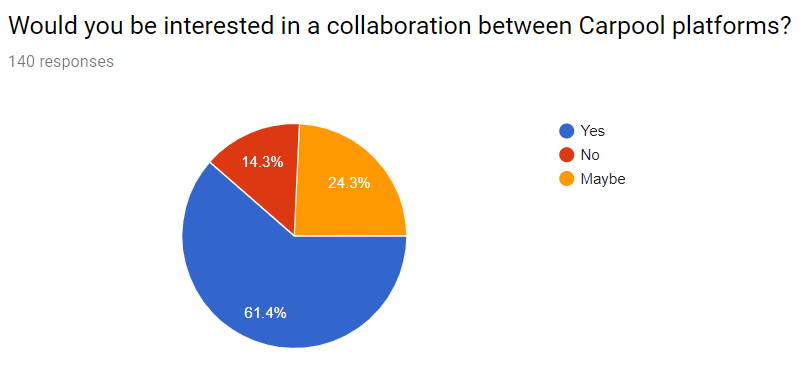
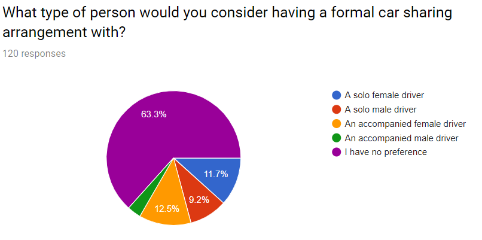
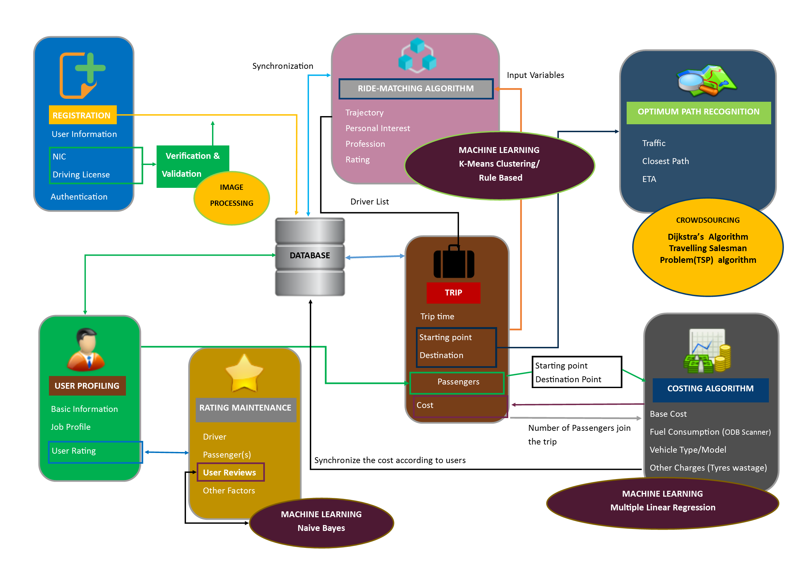

The Research
Traffic congestion is a major concern, which has drawn the attention of society. The major problem is the number of vehicles daily entering the urban areas a high. Most of the time, many vehicles are coming from the same area to defined destinations resulting in the vehicles are underutilized. To this end, this study proposes a solution to minimize this problem by implementing a ride-sharing platform: +Go. An initial study of the +Go platform is basically targeting the office staff in Sri Lanka because the majority of the offices are operating in highly congested urban areas. +Go ride-sharing platform matches the profiles of the passengers to the drivers, and vice versa, then suggests the rides using trajectory details, gender preference, personal interests, profession, rating, time and date as the parameters. Furthermore, the +Go platform uses computer vision methodologies to avoid fake registrations, and nonetheless, it uses crowdsourcing platforms to increase the accuracy of the suggested routes. The passengers, including the driver, have to share the cost for the trip and that is intelligently calculated according to fuel consumption of the vehicle, distance, the time taken to arrive at the destination, which is taken as the parameters for it. Further, to improve the experience of the user, the +Go system maintains a rating system which allows the driver to rate the ride with the passenger, and the passenger to rate on the driver, vehicle and the co-passengers.
The Domain
Literature Survey
From the survey we conducted with around 150 professionals, we identified most of the professional think ridesharing can reduce traffic congestion(72.5%) and save their fuel cost(68.3%). It is clear that ridesharing can be used as a solution to minimize traffic congestion in Sri Lanka, where they suggest more reasons like reduce environment pollution, save car ownership costs and to meet interesting people, they opt to use ridesharing.
Furthermore, more than 61% of the professionals like to collaborate with the ridesharing platform, which is a significantly higher amount. Therefore, we decided to develop a new app using the ridesharing concept. To do that, we associated many pieces of literature related to the field to identify the possible technologies and algorithms that can be used for the development process.

Hence, we considered the gender preference of the professionals while using a ride-sharing platform. Most of the professionals were having no issue with gender, and they like to travel with either male or female (63.3%). As well, some people only want to go with a particular gender. Precisely, 11.7% only with the female, and 9.2% only with the male, etc. Therefore, by considering this fact, we decided to provide gender preference to our application users during the registration, where they can select whatever the gender preference they like.

Research Gap
There are several ride-sharing applications in the market. However, according to the literature survey and other findings, we identified a research gap that they do not address major factors, which need to be addressed using a ride-sharing platform to ensure the reliability and the experience of the user. The following table implies a comparison of features between existing products and our proposed solution.
| Feature | Uber | Udio | Carpooling.lk | RideShare.lk | +Go |
|---|---|---|---|---|---|
| The system focused mainly on office staff | ✖ | ✖ | ✖ | ✖ | ✔ |
| Matching the passengers’ profile with the suitable drivers | ✖ | ✖ | ✖ | ✖ | ✔ |
| The suggestion of drivers per passenger interests | ✖ | ✖ | ✖ | ✖ | ✔ |
| Consider gender preference when registering to provide high security | ✖ | ✔ | ✖ | ✖ | ✔ |
| Validating the user by processing and comparing the images of both NIC and license in real time | ✖ | ✖ | ✖ | ✖ | ✔ |
| Analyze the reviews given by users based ontheir severity and categorizing them |
✖ | ✖ | ✖ | ✖ | ✔ |
|
Allowing the passengers to rate the driver, vehicle, and co-passengers separately at the end of the trip. |
✖ | ✖ | ✖ | ✖ | ✔ |
| The system will decide the estimated fare before requested the trip. | ✔ | ✔ | ✖ | ✖ | ✔ |
| Vehicle fuel fare calculated according to the condition of the vehicle. | ✖ | ✖ | ✖ | ✖ | ✔ |
| Dynamic fare calculation using OBD II adapter | ✖ | ✖ | ✖ | ✖ | ✔ |
| Crowdsourcing to improve the optimum path by analyzing with multiple algorithms |
✖ | ✖ | ✖ | ✖ | ✔ |
Our application only focused on professionals and no other ride-sharing application use this concept.
Also, existing solutions in Sri Lanka, suggest any driver to a passenger, and we have taken a step forward
in making a new advanced method to suggest drivers who match with the job profile, and the preferences of
the passengers. This reduces the number of dissatisfactions from the point of both the driver and the passenger.
Another important factor to be mentioned is that our application has the option for a passenger's guardian or
spouse to track the trip history of the fellow passenger and report any driver whom they think suspicious, and
those drivers won't be suggested that passenger again. Out of all the features introduced in UPM, only UDIO has
the feature to enable and disable the gender preference, and it is taken as a measure to ensure security on the
point of the user.
Validating the user by NIC and license will reduce the fake registrations, and this will eliminate manual
validations in the system. Our application allows users to write their own reviews at the end of the trip,
those sentiments get analyzed using a machine learning algorithm and a proper rating will be given to that
sentiment. Hence, our solution maintains separate ratings for the user’s behavior and vehicle. At the end of
the journey, users can rate the driver, vehicle and the co-passengers separately. Also, the passengers are
given the choice of blocking the drivers so that they won't be suggested in future sessions.
The Problem
According to the statistics from the Road Development Authority, there is the number of private vehicles
entering the Colombo Municipal Council (CMC) is increasing over the past three decades. Due to that reason,
traffic congestions are increasing as well as the number of accidents are increasing. As a result of the
traffic congestion, people are getting delay to reach their destinations, increased fuel wastage and
monetary losses. That impacted the whole development process; hence, the government has been lost
over Rs.500 million daily.
To reduce traffic congestion, people need public transportation instead of the private
vehicle because of the huge number of crowds travel at once. There are some issues in Public
Transportation, such as not comfortable because it is overcrowded, too expensive if we get on
air-conditioned buses and so on. Therefore, we thought of introducing a ride-sharing app, which
could become a solution to traffic congestion. The basic idea behind that was to combine professionals
who are traveling to work by their private vehicles. The ability to reduce the number of vehicles using
the ride-sharing application because of one vehicle carries several people together.
Research Objectives
Main Objectives
The main objective of our study was to develop a solution that can minimize traffic congestion during office hours in Sri Lanka. With the application we proposed targeting the professionals, it can reduce the traveling costs and environmental pollution as well. Our objective was to reduce traffic congestion while providing the same comfortability level, expectations and professional level to the users. By introducing a new ride-sharing application to professionals, it is indeed accomplished. Hence, our app has a significant impact on society.
Specific Objectives
User Profile Management
In UPM, our main objective was to introduce a new ride-matching algorithm to the users. The ride-matching algorithm works according to the profession and preferences of the user. Hence, we needed to collect user information like gender preference, smoking condition, like quietness, motion sickness, language preference, vehicle comfortability, and profession for that. After receiving that information, the new ride-matching algorithm was developed using rule-based machine learning and K-Means clustering. In the algorithm, it is needed to get the current location of the driver, and for that polling, the technique was implemented where every 5 seconds, the current position of the users were recorded in the database. Also, a new algorithm was developed to find the reported drivers based on the actions taken by the spouse or the guardian and removed them from the suggested list. Implemented the OTP system for the mobile number verification of the users to confirm the identity validation.
Document Validation
The specific objective of document validation is to validate the driving license and NIC cards, and identify the NIC number and expiration dates using an image processing algorithm and minimize the risk of fake profiles getting registered in the system. In this, we identify and check the compatibility of driving license and National Identity Card (NIC) with relevant to the NIC number and also consider the most significant components in them to verify their validity.
Profile Rating Maintenance
The objective of profile rating maintenance is to identify the response of the drivers and passengers concerning other passengers who joined the trip and rate the people correspondingly. To achieve this, the system has to detect some keywords, which were selected by the users regarding their experiences in the ride-sharing. Further, this system classifies the reviews given by the users by using a sentiment analysis algorithm (Naïve Bayes). A feature of blocking drivers also have given for the passengers to provide the freedom to filter the suggestions of our application. Hence, this component does help to ensure the security of the passengers and drivers as well.
Optimum Path Recognition
The main objective of optimum path recognition is to identify the closest path. In this proposed system, Dijkstra’s Algorithm and the Travelling Salesman Problem (TSP) Algorithm will be applied to perceive the closest path with the least traffic, which connects source and destination while minimizing the traffic congestion. Dijkstra Algorithm finds the shortest path by considering the weight of the edges in a weighted graph, Depending upon the user’s option, the weight of the edges will vary as distance or time according to the applicable conditions in it. Since we enable the registered users to enter the live updates by uploading images, it will be more helpful to implement crowdsourcing to predict the most efficient route.
Fare Calculation
The Specific objective of fare calculation is to give reasonable cost to both drivers and passengers. While the ride with passengers meets the several segments. If a new passenger joins the trip or passenger end up the trip, the new segment will be created. Each Segment calculates the fare for the passenger that calculation depends on cost for fuel consumption within the segment, the number of current passengers, and the current price of the fuel in Sri Lanka. Used the OBD II adapter to get fuel consumption of the vehicle. Final fare of the ride is calculated by adding the fare of all the segments which passenger has traveled.
Methodology
In our system, we have divided the functionalities mainly into 4 parts including UPM, DVPRM, FC, and OPR.

User Profiling Management is considered as the core functionality of the +Go application. The main idea behind
the UPM is to suggest the most suitable drivers for a passenger. In our study, we have divided the UPM into 2
phases.
● User Profiling
● Ride matching algorithm
In User Profiling, we collect the basic information, job profile, preferences like gender preference, smoking preference,
and language preference, like quietness, motion sickness, and ratings. At the initial stage, we verify the mobile phone
number of the user to ensure the trustworthiness in the application. Users who are unable to verify the phone number or
creating an account with the same phone twice are not allowed to proceed further in our app. It always communicates with
the rating class to keep track on the ratings, and the passenger details are taken from the trip class. For each registered user,
a separate record is maintained in the database. All the results are sent to the database and that information is used in the Ride
Matching algorithm.
The system diagram which summarizes the whole architecture of the proposed Intelligent Complementary Ride-Sharing System; specifically the Document validation and Profile Rating Maintenance component can be identified as follows.
In the phase of user registration, both the passenger and the driver is considered as similar user roles. The user is asked to upload the front image of the national identity (Electronic or non-electronic) card in Sri Lanka and after successful extraction of data from the image, asked to upload the front image of the license card. Hence the image is verified and necessary information is extracted; also the NIC numbers extracted from both are compared to make sure that they belong to the same user. At instances of failing to process the images uploaded, the user is asked to re-enter a clear image, or else the user does not get the chance to proceed. This is done to avoid any spammers getting register to the system.
In our system, users can behave as a passenger or as a driver at different times. At the completion of the trip session, the passenger is asked to rate his/her experience.
He/She can simply rate with 5 is everything is good; the Driver, Vehicle and the Co-Passengers will get the default rating 5. The passenger can give some compliments to the driver as well. If the rating is below five, the passenger is asked to specify which made them the journey uncomfortable. Further, they are allowed to write their own review as well and the system will identify the user experience accordingly. Drivers to get the chance to rate and review the passengers at the end of each trip session.
Fare calculation plays a vital role in distributing fare among the passengers. There were two types of fare calculations. The first one was estimated fare calculation which is predicted before starting the ride, and the other one is the actual fare calculated using the statistics collected, and it will be notified to passengers via a push-up notification at the end of the riding session. Fuel consumption varies from vehicle to vehicle. So, the project surveyed to collect information about the cars which were traveling within the Colombo area. Statistics like manufacturer year, engine capacity were collected during the survey.
In optimum path recognition, we use both Dijkstra's Algorithm and the Travelling Salesman Problem (TSP) algorithm to identify the closest path with the least traffic. Because of that, it helps to minimize traffic congestion in urban areas. Dijkstra's Algorithm provides the optimal path to reach the destination by considering the weight of the edges. According to the user's concern, the weight of the graph gets vary. If the user's concern is the distance factor, the length of the edges will be identified as the weight. Similarly, if the user's concern is about traffic, accidents or road closures, weight becomes the calculated time duration to cover the specified distance. Travelling Salesman Problem (TSP) Algorithm provides the optimal path to travel through a city, which covers all the user-specified locations. When users set their locations, our supposed system will identify the order of the locations to visit. Then this algorithm finds the optimal path, which travels, through each location (node) in the listed user-specified locations.